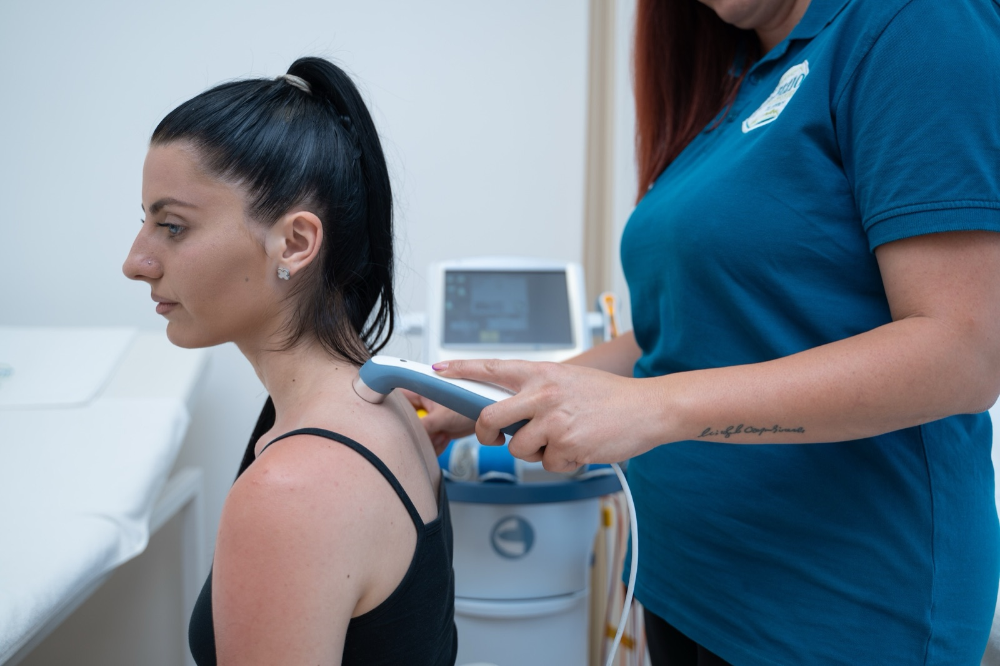
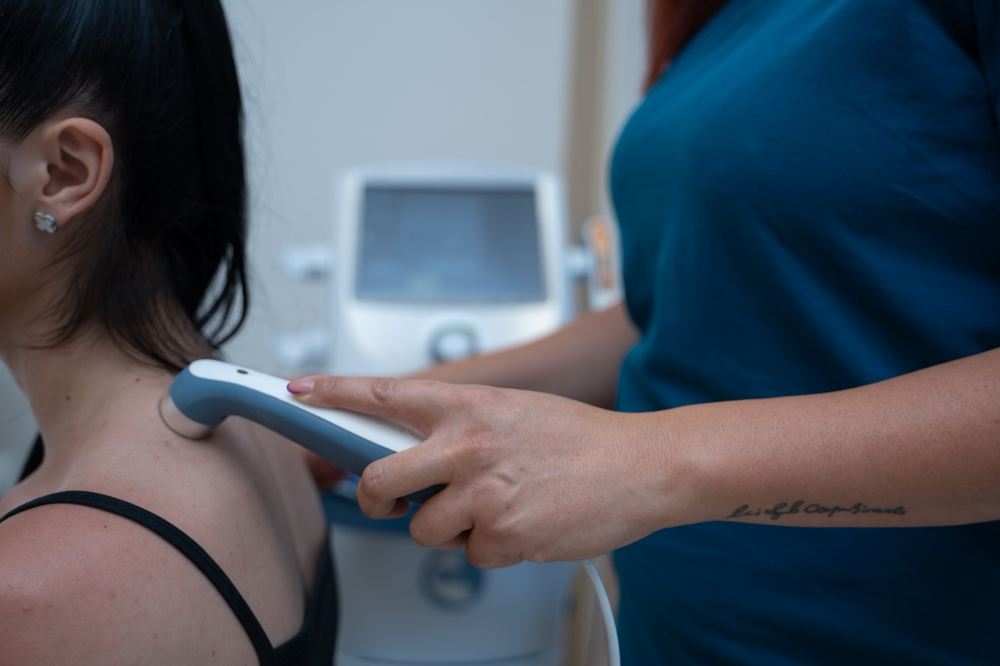

Ultrazvučna terapija — duboko zagrevanje tamo gde ruka ne stigne
Bolan Ahilov tendon, „teniski lakat" koji se ne smiruje, peta koja ujutru ne može da stane na pod, ukočeno rame posle gipsa — to su klasične situacije za terapijski ultrazvuk. Mala glava sonde, koja klizi po hladnom gelu, šalje ultrazvučne talase 3–5 cm u dubinu i tamo gde masaža ne može da pomogne: zagreva tetivu, opušta stara stezanja, smanjuje upalu i pomaže tkivu da se brže oporavi.

Kako izgleda tretman
Hladan gel na koži
Nanosimo providan gel na predeo tretmana — služi kao „most" između sonde i kože, da ultrazvučni talasi ne ostanu zarobljeni u vazduhu.
Sonda u sporim krugovima
Terapeut polako kruži glavom sonde po području — nikada ne stoji na jednom mestu. Možete osetiti blagu toplotu (kontinuirani režim) ili baš ništa (pulsni režim).
Kratko i bezbolno
Tretman po regiji traje 5–10 minuta. Najčešće je deo dužeg, kombinovanog tretmana — uz elektroterapiju ili vežbe istog dana.
Najbolje indikacije
Na ultrazvuk vas najčešće šalju fizijatar ili sportski lekar — zbog tetive, zgloba ili ožiljka koji se sporo oporavlja. Evo gde najčešće daje rezultat.
Mišići, tetive i meka tkiva
- Upala tetive (tendinitis, tendinopatija) — Ahilova, patelarna, rotatorna manžetna ramena
- Teniski i golferski lakat (epikondilitis)
- Istegnuće mišića i sitne rupture mišićnih vlakana
- Plantarni fascitis — bol u peti, posebno prvi koraci ujutru
- Burzitis — rame, kuk, lakat
- „Triger tačke" i tvrdokorni mišićni čvorovi
- Sporo zarastajuće manje povrede mekih tkiva
Zglobovi, ožiljci i hronični problemi
- Kalcifikati oko tetiva (kalcijumski naslagi)
- Ožiljci posle operacije — omekšavanje i bolja pokretljivost tkiva
- „Smrznuto" rame (adhezivni kapsulitis)
- Osteoartroza kolena i kuka — smanjenje bola i ukočenosti
- Sindrom karpalnog tunela (blag do umeren stadijum)
- Bol u vilici (TMZ — temporomandibularni zglob)
- Ukočenost zgloba posle dužeg gipsa ili imobilizacije

Koliko traje i kako se planira
Polazni okvir — frekvenciju, režim i broj tretmana prilagođavamo dijagnozi, dubini problema i preporuci lekara.
- Trajanje po regiji
- 5–10 minuta
- Frekvencija aparata
- 1 MHz (dublje) ili 3 MHz (površnije)
- Režim rada
- kontinuirani (hronično) ili pulsni (akutno)
- Učestalost
- 2–4 puta nedeljno
- Tipičan paket
- 6–10 tretmana
- Kombinacija
- često uz elektroterapiju ili vežbe istog dana
Šta da očekujete
Nije potrebna posebna priprema — obucite ležernu odeću koju lako možete da podignete ili spustite preko područja tretmana. Na kožu prvo ide hladan, providan gel; potom terapeut polako kruži glavom sonde po regiji. U kontinuiranom režimu osetićete prijatnu, blagu toplotu kako prolazi kroz dubinu tkiva; u pulsnom režimu najčešće ne osećate ništa — i to je u redu, mehanički talas i dalje radi. Tretman je kratak, bezbolan i obično se sklapa u celovitu sesiju sa drugim modalitetima koje vam je propisao lekar.
Kada ultrazvučna terapija nije za vas
Recite nam unapred ako: ste trudni (ne radimo preko stomaka i donjeg dela leđa), imate aktivnu malignu bolest u regiji koja bi se tretirala, imate svežu frakturu (rana faza zarastanja), pejsmejker u predelu rada, aktivnu infekciju ili otvorenu ranu na koži, skorašnju duboku vensku trombozu (DVT) ili izrazito smanjen osećaj za toplotu/dodir na tom mestu. Ultrazvuk se nikada ne radi preko očiju, srca, kičmene moždine, reproduktivnih organa i — kod dece — preko zona rasta (epifiznih ploča). Pre prve sesije postavljamo nekoliko kratkih pitanja; ako nešto nije sigurno, tražimo dozvolu vašeg lekara.